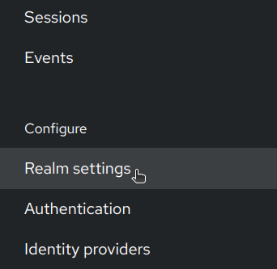

Identity Provider
Introduction to Identity Management
Azimuth has two kinds of users: "Platform Admins" who are able to sign into Azimuth, manage deployed platforms in a tenancy, and administer access to those platforms; and "Platform Users", who can access one or more platforms deployed onto Azimuth.
Only Platform Admins require an OpenStack account. This is because each azimuth tenancy (i.e. OpenStack Project) has an associated "realm" in Keycloak. Keycloak is an Identity Management Platform, which allows platform access to be granted granularly per user.
For example, say you are running a workshop on JupyterHub. Using Keycloak, a project admin can create users in the associated realm for each workshop attendee. These attendees can then only be granted access to one specific JupyterHub deployment for the workshop, after which their access can be revoked.
Important concepts in Keycloak are Users, Clients, Realm Roles and Groups
| Concept | Definition |
|---|---|
| Users | Individuals who can authenticate into the platform. In Keycloak, users can be created per realm, allowing fine-grained access control specific to each Azimuth tenancy. |
| Clients | Applications or services (e.g. JupyterHub) that users can access through Keycloak. Clients are configured within a realm and represent the endpoints that Keycloak secures. |
| Realm Roles | Permissions that can be assigned to users within a realm. These define what actions a user can perform and are often tied to specific clients or administrative functions. |
| Groups | Collections of users within a realm that allow for bulk assignment of roles and permissions. Each realm typically includes at least two groups: admins and platform-users, along with unique roles for each deployment.admins have admin status for a realm, allowing them to perform actions on the Keycloak admin console.platform-users are granted access to every deployment in the realm.Alternatively, the unique groups for each deployment can be used to grant access to a single deployment. Additionally, subgroups are created which can grant access to a single service under that deployment. |
Groups Example
Consider a Kubernetes cluster platform deployed under azimuth, my-binderhub. Two services are exposed under it if enabled, BinderHub and JupyterHub.
platform-usershave access to both services, and every other deployment in the tenancy.- Users in the
kubeapp-my-binderhubhave access to both services, BinderHub and JupyterHub, but no other deployments. - Users in the
kubeapp-my-binderhub/my-binderhub-binderhub-azimuth-jupyterhubgroup have access to the JupyterHub, but not BinderHub.
Admins can add users to these individual groups through the Keycloak dashboard, hence granting them access to individual services.
Bulk Importing Users
Bulk Importing/Generating a set of users can be achieved via a partial import to your Keycloak realm.
Here is a simple process to do so:
- Download this helper script csvToJsonConverterScript.sh
- Set the script as executable with
chmod +x csvToJsonConverterScript.sh - Create a CSV file (in a spreadsheet editor, or a text editor), with the following format, i.e.:
username/*(1)!*/,firstName/*(2)!*/,lastName/*(3)!*/,email/*(4)!*/,password/*(5)!*/,temporary/*(6)!*/,require_idp_link/*(7)!*/,realmRoles/*(8)!*/,groups/*(9)!*/
mpython,Monty,Python,mpython@example.com,Password123,false,false,some_role,some_group
gzilla,God,Zilla,gzilla@example.com,Password456,true,true,some_role;some_second_role,some_group;some_second_group
- Username. If using IAM authentication, this should be FedID.
- First Name
- Last Name
- Email Address
- Initial Password
- One of
trueorfalse. Iftrue, the user will be prompted to change their password. - One of
trueorfalse. Iftrue, the user will be prompted to connect their account to an identity provider, i.e. Azimuth's Keystone-based default provider, or a custom provider you have set up i.e. IAM. - A semicolon separated list of realm roles to assign to the user
- A semicolon separated list of groups to assign to the user
- Run the script to generate an equivalent JSON file with
./csvToJsonConverterScript.sh <input_file> <output_file>- I.e.
./csvToJsonConverterScript.sh myCreatedUserCSV.csv someOutputJsonFile.json
- I.e.
- On Keycloak, go to Realm Settings
 - Click Actions, then Partial Import in the top left
- Browse for and upload the JSON output, and check it for sanity, i.e. check the number of users, and the properties of the json
- Click import, and wait for it to complete
- Check the Users tab for the created users
{kind=link}
{kind=link}
{kind=link}
Adding an IAM-Based Identity Provider
Warning
This process hasn't yet been fully tested and explored against user use cases. Please reach out with comments, improvements or issues; and carefully consider each step
In addition to allowing login via the same account interface as OpenStack (via Keystone, through the Azimuth identity provider), an additional custom identity provider can be setup.
This can, for example, use IRIS-IAM/SKA-IAM. Users can then link their accounts to allow logging in through IAM; or groups can be assigned based on IAM groups (for example, to allow access to JupyterHub for all users in a research group)
To set this up:
- On Keycloak, open Identity Providers from the sidebar
- Press Add Provider → OpenID Connect v1.0
- Set the Alias to something identifiable, i.e. "iris-iam"
- Set the Display Name to be a human-readable equivalent, i.e. "IRIS-IAM"
- Copy the Redirect URI
- Visit your IAM interface, for example https://iris-iam.stfc.ac.uk/ or https://ska-iam.stfc.ac.uk/, and login
- Visit "My Clients" in the top left, and press New Client
- Add a Redirect URI from the URI you copied from Keycloak
- Set the client name, description, and contact email
- In the Scopes tab, ensure
openid,profile,email, andpreferred_usernameare checked - In the Credentials tab, set
Token endpoint authentication methodtoClient secret over HTTP POST authentication - Save the client
- In the Main tab, copy the Client ID
- Back in Keycloak, paste the Client ID
- In IAM, in the credentials tab, copy the Client Secret
- In Keycloak, paste the Client Secret
- Use Discovery Endpoint is checked, then use one of:
https://iris-iam.stfc.ac.uk/.well-known/openid-configuration
https://ska-iam.stfc.ac.uk/.well-known/openid-configuration - Ensure Client Authentication is set to "Client secret sent as post"
- Press Add
- Open the newly added provider
- Under OpenID Connect settings → Advanced, set "Scopes" to
openid profile email preferred_username - Under "Advanced Settings", set "First login flow override" to "azimuth first login"
- This is important as this authentication flow disables the "Review Profile" step which is present in the default broker login flow. Otherwise, users could create new users with any username of their choice.
- Press Save
You now have a minimally functional login provider, allowing user accounts to be linked to IAM.
Existing users from the Azimuth provider (i.e. yourself) should be prompted to link their account to IAM when they log in.
Manually Adding Users
The default behaviour for new users logging in with IAM is to create them an account automatically. This user account can then be granted access to services manually via groups.
Alternatively, users can be pre-created then connect their account to IAM upon first login. A new user with their username and a temporary password can be created and assigned groups. When logging in for the first time with IAM, the account matching their username will link to it.
Restrict access to a certain IAM group, and assign a Keycloak group
As stated above, the default behaviour for an unknown user is to automatically create a Keycloak account. Access to IAM can be restricted to users with a specific claim, for example IAM group or profile information like email address. The following example shows how to restrict login based on the groups claim.
Note
If an IAM group doesn't yet exist for your team, you should contact your IAM team for support in creating one.
- Under Keycloak → Identity Providers, open your custom OpenID identity provider for IAM
- Under Advanced Settings, enable "Verify essential Claim"
- For Essential claim, enter
groups- For other use cases, this can be any claim allowed by your set of OpenID scopes. See the INDIGO IAM documentation.
- Essential claim value can take a RegEx string. For example,
.*stfc-cloud.*to require all users be in thestfc-cloudIAM group. Remember to properly escape RegEx characters, and be aware this example string allows for any group name that contains the sub-stringstfc-cloud.
{kind=link}
Assign an IAM group to a Keycloak group
In addition to restricting login based on claim, Mappers can be used to assign Keycloak groups or other user properties based on them. For example, to assign all users in the stfc-cloud group access to a service like JupyterHub
- Under Keycloak → Identity Providers, open your custom OpenID identity provider for IAM
- At the top, visit the Mappers tab and press Add Mapper
- If as above you have already restricted access via Essential Claim to your group, you can simply select Hardcoded Group → Select your JupyterHub access group
- Alternately, there are more advanced mapper types, some of which themselves support RegEx requirements
- For example, to allow all users to login but only allow a certain IAM group to access JupyterHub:
- Mapper type: Advanced Claim to Group
- "Add Claims" → Key
groups, value.*stfc-cloud.* - Enable "RegEx claim values"
- Set the JupyterHub service-specific group to grant at the bottom
- Press Save, after naming it